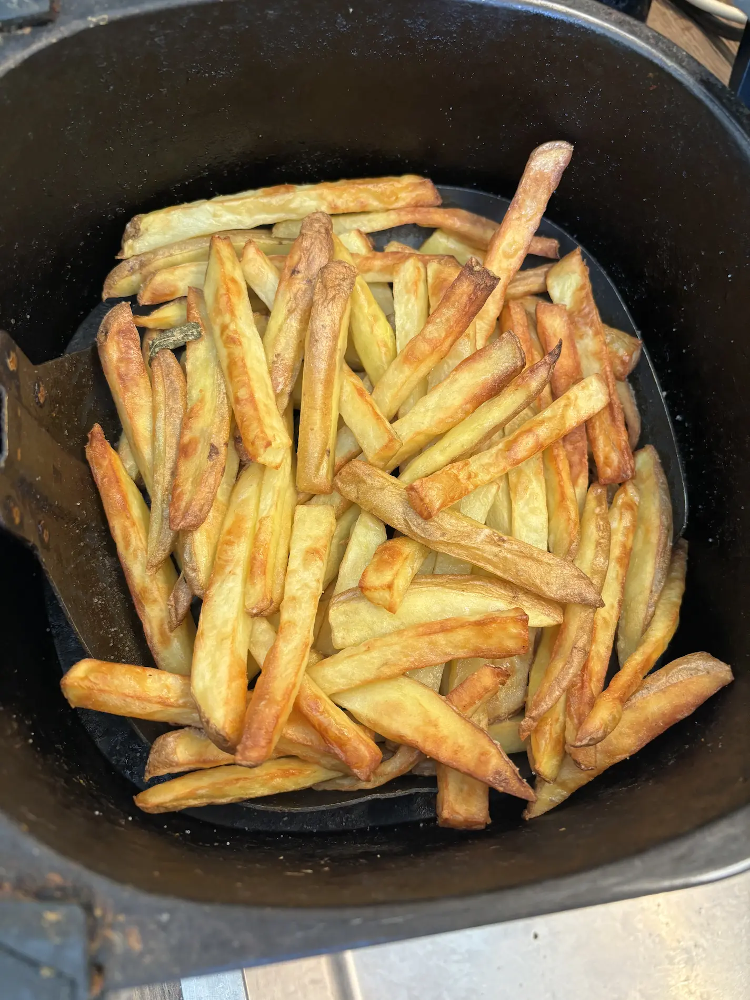
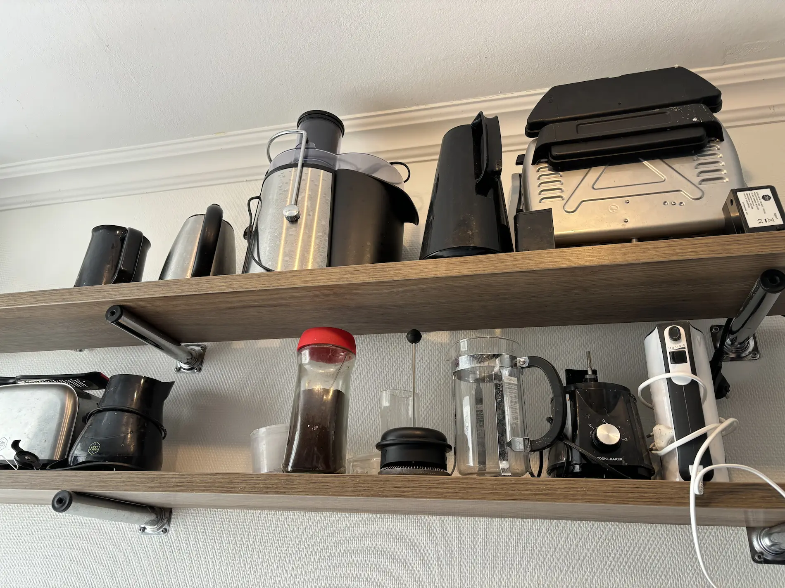
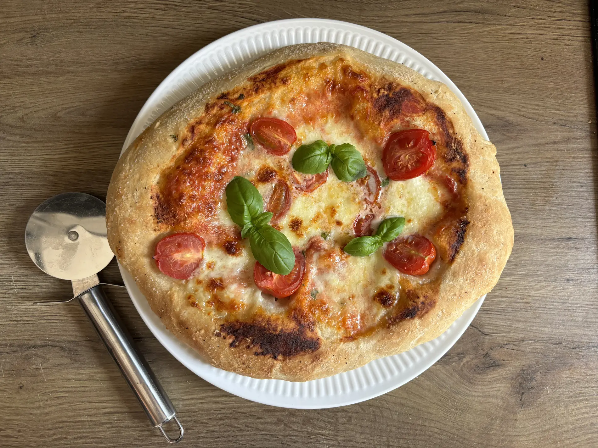
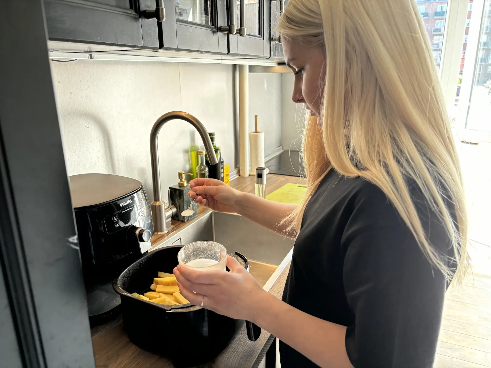

Mad og køkkenmaskiner
caroline og hendes køkken
Caroline har altid haft en passion for madlavning og en dyb kærlighed til sine køkkenmaskiner. Fra barndommen har de været trofaste ledsagere i hendes kulinariske rejse, symboliserende både glæde og udfordringer. Hendes køkkenmaskiner er ikke blot redskaber, men næsten som venner, der bringer hende glæde og ro i en travl verden. Med omhu og respekt værdsætter hun deres bidrag til hendes kreative udtryk gennem madlavning.
Galleri



